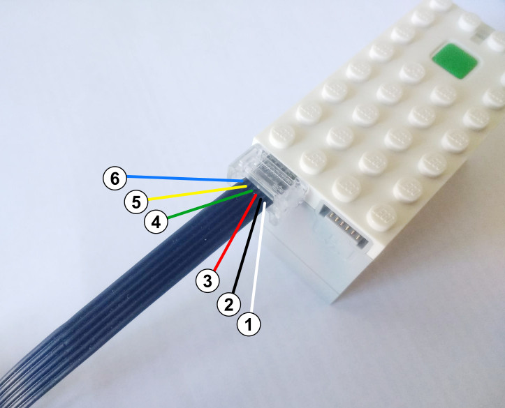

| ❌ | ✅ | ✅ | ✅ | ✅ | ✅ | ✅ |
|---|
汎用UARTデバイス
Powered UpとEV3は、汎用UARTデバイスのハブへの接続をサポートしています。 ピン配置を以下に示します。コネクターの向きに注意してください。EV3では、 内部のワイヤーの色は下の図と一致しています。

ピン |
Powered Up (UART) |
EV3（UARTセンサー） |
EV3（I2Cセンサー） |
|---|---|---|---|
1（白） |
モーター端子1 |
オプションのバッテリー電源 |
オプションのバッテリー電源 |
2（黒） |
モーター端子2 |
なし |
なし |
3（赤） |
グランド |
グランド |
グランド |
4（緑） |
VCC (3.3 V) |
VCC (5 V) |
VCC (5 V) |
5（黄） |
ハブ TX（センサー RX）（3.3 V） |
ハブ TX（センサー RX）（3.3 V） |
SCL（マスター）（3.3 V） |
6（青） |
ハブ RX（センサー TX）（3.3 V） |
ハブ RX（センサー TX）（3.3 V） |
SDA（マスター）（3.3 V） |
- class UARTDevice(port, baudrate=115200, timeout=None, power_pin=0)
汎用UARTデバイス。
注意:
power_pinオプションは自己責任で使用してください。不用意に ピンへ電源を供給すると、ハブやデバイスを損傷する可能性があります。 このオプションを使用する場合、リスクを理解したかどうかの確認が 求められます。- Parameters:
port (Port) – デバイスが接続されているポート。Powered UPハブでは すべてのポートがサポートされます。EV3ではセンサーポートのみが サポートされます。
baudrate (int) – UARTデバイスのボーレート。
timeout (Number, ms) –
readとwriteの実行中に待機する 時間。Noneを選択すると、無期限に待機します。power_pin (int) – デバイスの電源要件。ピンに電源を供給しない 場合は
0（デフォルト）を使用します。Powered UPハブでは、 ピン1または2にはそれぞれ1または2を使用します。 これはモーターへの給電と同等に、バッテリー電源をそのピンに 供給します。EV3では、1を使用してバッテリー電源をピン1に 供給しますが、わずかな電流しか利用できません。
- Raises:
ValueError –
timeoutが0または負の場合。
- await read(length=1) bytes
バッファから指定したバイト数を読み取ります。
要求したバイト数が受信されるまで、プログラムは待機します。
timeoutより長くかかる場合は、ETIMEDOUT例外が発生します。- Parameters:
length (int) – 読み取るバイト数。1以上でなければなりません。
- Returns:
デバイスから返されたバイト。
- Raises:
ValueError –
lengthが1未満の場合。OSError – 読み取りが
timeoutより長くかかる場合。
- read_all() bytes
バッファ内の現在のすべてのバイトを読み取ります。バッファが空の 場合でも、待機せずに即座に戻ります。
- Returns:
バッファ内の現在のバイト。読み取るものがない場合は空のバイト列。
- set_baudrate(baudrate)
UARTデバイスのボーレートを変更します。
- Parameters:
baudrate (int) – すべての値がサポートされるとは限りません。
- Raises:
ValueError –
baudrateが1未満の場合。
- await wait_until(pattern)
特定のバイトシーケンスが受信されるまで待機します。パターンに 一致しないバイトは破棄されます。
- Parameters:
pattern (bytes) – 待機するバイトシーケンス。空であっては なりません。
- Raises:
ValueError –
patternが空の場合。OSError – このメソッドがすでに実行中の場合。
- clear()
受信バッファを空にします。
例: UARTデバイスへの読み取りと書き込み
from pybricks.media.ev3dev import SoundFile
from pybricks.hubs import EV3Brick
from pybricks.iodevices import UARTDevice
from pybricks.parameters import Port
# Initialize the EV3
ev3 = EV3Brick()
# Initialize sensor port 2 as a uart device
ser = UARTDevice(Port.S2, baudrate=115200)
# Write some data
ser.write(b"\r\nHello, world!\r\n")
# Play a sound while we wait for some data
for i in range(3):
ev3.speaker.play_file(SoundFile.HELLO)
ev3.speaker.play_file(SoundFile.GOOD)
ev3.speaker.play_file(SoundFile.MORNING)
print("Bytes waiting to be read:", ser.waiting())
# Read all data received while the sound was playing
data = ser.read_all()
print(data)